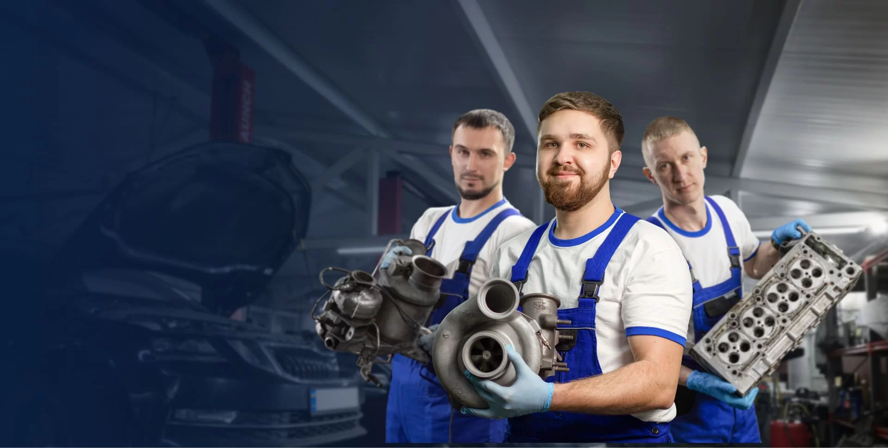

AutoPro — спеціалізований автосервіс у Києві
Наш автосервіс — це сучасний центр технічного обслуговування автомобілів, який працює понад 10 років. Ми спеціалізуємося на комплексній діагностиці, профілактиці та ремонті легкових автомобілів усіх марок. Наша команда — це кваліфіковані майстри з багаторічним досвідом, які використовують сучасне діагностичне обладнання та сертифіковані інструменти. Ми гарантуємо високу якість робіт, чесні ціни та індивідуальний підхід до кожного клієнта. Ваша безпека на дорозі — наш головний пріоритет.
Послуги
- Діагностика. Комп'ютерна діагностика всіх систем автомобіля та електронних блоків керування.
- Двигун. Ремонт та обслуговування двигунів: КПЗ, капремонт, заміна витратних матеріалів.
- Ходова частина. Ремонт підвіски, заміна гальмівних колодок і дисків.
- Технічне обслуговування. Заміна мастил, фільтрів, свічок та технічних рідин.
- Розвал-сходження. Регулювання на сучасному 3D-обладнанні.
- Шиномонтаж. Балансування коліс та сезонне зберігання шин.
- Запчастини. Підбір та продаж оригінальних деталей і якісних аналогів.
Ціни
- Комп'ютерна діагностика двигуна від 500 грн
- Заміна моторного мастила та фільтра від 300 грн
- Діагностика ходової частини безкоштовно за умови ремонту у нас 350 грн
- Заміна гальмівних колодок (одна вісь) від 600 грн
- Регулювання розвалу-сходження (1 вісь) від 650 грн
- Шиномонтаж (комплект 4 коліс з балансуванням) від 1200 грн
- Нормо-час робіт майстра 600 грн/год